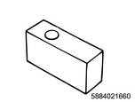
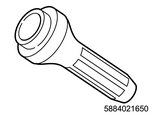
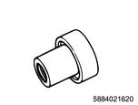

Rear differential assembly reassembly (All models)
1. Differential carrier reassembly
1. Install the outer bearing to the differential carrier using special tool.
Note
- Install the outer bearing outer race to the differential carrier using a bearing installer and a grip.
SST: 5-8840-2164-0 - bearing installer

SST: 5-8840-0007-0 - grip

- Grip
- Bearing installer
2. Install the inner bearing to the differential carrier using special tool.
Note
- Install the inner bearing outer race to the differential carrier using a bearing installer and a grip.
SST: 5-8840-2163-0 - bearing installer
SST: 5-8840-0007-0 - grip

- Grip
- Bearing installer
2. Shim adjustment
1. Install special tool to the differential carrier.
Note
- Adjust the drive pinion mounting distance.
- Apply gear oil to the inner and outer drive pinion bearings.
- Clean the pinion adjustment gauge set.
- Insert the gauge set into both the inner and outer bearings.
- Install the special tools indicated below through the inner and outer bearings.

SST: 5-8840-2166-0 - gauge plate
SST: 5-8840-0129-0 - pilot
SST: 5-8840-0127-0 - stud & nut
SST: 5-8840-2085-0 - pilot
2. Tighten the nut using a torque wrench.
Tightening torque： 2.7 N・m { 0.28 kgf・m / 24 lb・in }
- Outer pilot
- Inner pilot
- Gauge plate
- Stud and nut
Note
- Clean the side bearing installation section.
- Fit the disc and dial gauge into the arbor and install them to the side bearing installation section.
SST: 5-8840-0126-0 - dial indicator
SST: 5-8840-2166-0 - gauge plate
SST: 5-8840-2167-0 - disc 2pcs.required

SST: 5-8840-0128-0 - arbor
- Dial gauge
- Gauge plate
- Disk, 2 pcs.
- Arbor
Note
- Install and tighten the bearing cap to the specified torque.
Tightening torque： 108 N・m { 11.0 kgf・m / 80 lb・ft }
3. Adjust the drive pinion.
Note
- Values displayed by the dial gauge is in inch.
- Set the dial gauge to 0.
- Place it on the mounting post of the gauge arbor so that the contact button contacts with the indicator pad.
- Lower the dial gauge until the gauge needle of the dial gauge turns a half turn clockwise.
- Tighten and secure the dial gauge at this position.

- Dial gauge
- Arbor
- Plunger
- Gauge plate
Note
- Place the plunger on the gauge plate, and slowly move the gauge arbor back and forth to install it in the position where the fluctuation of the dial gauge is maximized.
- In this position, set the dial gauge to 0 again.
- Repeat the above procedure again to verify proper setting of the 0 point.
Note
- After setting the 0 position, rotate the gauge arbor until the dial gauge rod does not touch the gauge plate.
- Record the value indicated by the gauge needle of the dial gauge.
- Example: The dial indicator reading numerical value is 0.085.
Note
- Record the pinion depth code marked on the top of the drive pinion.
- Since positive values mean mesh depths larger than the specified value, reduce the shim thickness for adjustment.
- Since negative values mean mesh depths smaller than the specified value, increase the shim thickness for adjustment.
- If the depth code of the pinion is 0, no adjustment has been made.
Note
- Select a shim from the table below.
Note
- Before placing an order for shims, check the shim thickness indicated in the above table and identify an appropriate part number in the parts catalog.
4. Remove special tool from the differential carrier.
3. Drive pinion installation
1. Install the inner bearing to the drive pinion using special tool.
Note
- By using a pinion bearing installer and press, install the inner bearing to the pinion with shims.

SST: 9-8522-1165-0 - pinion bearing installer
Caution
- Pressurize the inner race only and do not pressurize the roller gauge.

- Pinion bearing installer
2. Install the collapsible spacer to the drive pinion.
Note
- Install a new collapsible spacer.
3. Install the drive pinion assembly to the differential carrier.
4. Oil seal installation
1. Install the oil seal to the differential carrier using special tool.
Note
- Install the outer bearing and oil seal.
- By using a pinion oil seal installer, install a new oil seal with grease on the seal lip.

SST: 5-8840-2165-0 - oil seal installer
- Pinion oil seal installer
5. Flange installation
1. Install the flange to the drive pinion.
2. Install the flange nut to the drive pinion using special tool.
Note
- Apply lubricating oil to the thread of the pinion.
- Stop the flange rotation using the flange holder and temporarily tighten the flange nut so that there is no play in the drive pinion.
Caution
- Install a new flange nut.
SST: 5-8840-0133-0（J-8614-11） - flange holder
- Flange holder
6. Drive pinion adjustment
1. Adjust the preload.
Note
- Adjust the preload of the drive pinion.
- Measure and record the pinion bearing preload using a torque meter.
- Tighten the flange nut so as to attain the specified starting torque.
Preload： 0.7 to 1.3 N・m { 0.07 to 0.13 kgf・m / 6 to 12 lb・in }
Caution
- Be careful not to over-tighten or tighten insufficiently.
- If it is loose, tighten the nut again.
Standard： 245 to 294 N・m { 25.0 to 30.0 kgf・m / 181 to 217 lb・ft }

Note
- Crimp the flange nut in 2 sections using a special tool.

SST: 5-8840-2293-0 - end nut lock punch
Caution
- When crimping, rotate the nut to confirm the correct bearing preload.
- Measure the pinion bearing preload using a torque meter again.
- Punch: End nut
- 1.5 mm or less
7. Ring gear adjustment
Note
- Adjust the backlash of the ring gear.
1. Install the side bearing to the differential cage using special tool.
Note
- By using a bearing installer and grip, install the side bearing without using shims.

SST: 5-8840-2162-0 - side bearing installer
SST: 5-8840-0007-0 - grip
- Bearing installer
- Grip
2. Install the differential cage assembly to the differential carrier.
Note
- Insert the differential cage assembly with bearing outer race attached in the side bearing hole.
3. Remove play from the differential cage assembly using a feeler gauge.
Note
- Using 2 sets of the feeler gauge, insert them between the left and right bearing outer races and the carrier assembly until the play becomes 0.
- Confirm that each feeler gauge is pressed in up to the bottom of the bearing installation section.
- Install the dial gauge to the differential carrier and place it so that the leading end of the indicator touches the ring gear teeth at a proper angle.
SST: 5-8840-0126-0 - dial indicator
- Dial gauge
4. Adjust the backlash.
Note
- Adjust the right and left feeler gauge thicknesses until the backlash of the ring gear reaches the standard value.
Standard： 0.15 to 0.20 mm { 0.006 to 0.008 in }
Note
- When the backlash is adjusted to the standard value, remove each feeler gauge and determine shim thickness.
- To provide a preload with the side bearings, install a shim thicker than the measured shim thickness by 0.05 mm {0.002 in}.
- Use new shims.
5. Remove the side bearing from the differential cage using special tool.
Note
- Remove the side bearing using a bearing puller, adapter, and bearing remover leg.

SST: 5-8840-0013-0 - bearing puller
SST: 5-8840-0014-0 - bearing remover leg
SST: 5-8840-2196-0 - adaptor
- Bearing puller
- Adapter
- Bearing remover leg
6. Install the side bearing to the differential cage using special tool.
Note
- Install the side bearing with the selected shims by using a bearing installer and grip.
SST: 5-8840-2162-0 - side bearing installer
SST: 5-8840-0007-0 - grip
- Grip
- Bearing installer
7. Install the outer race to the side bearing.
8. Install the differential cage assembly to the differential carrier.
9. Install the bearing cap to the differential carrier.
Note
- Install the bearing cap by aligning the alignment marks added when the bearing cap was disassembled.

- Alignment mark
Note
- Tighten the bearing cap bolt.
Tightening torque： 108 N・m { 11.0 kgf・m / 80 lb・ft }
10. Measure the ring gear using a dial gauge.
Note
- Measure the fluctuation of the ring gear on its backside.
Limit： 0.05 mm or less { 0.002 in or less }
11. Inspect the ring gear.
Note
- Inspect and adjust the tooth contact of the ring gear.
- Thoroughly wipe the drive pinion and the teeth of the ring, and then apply a thin coat of red lead primer or equivalent to 7 or 8 teeth of the ring.
- Inspect the tooth contact condition on the ring teeth, and if the tooth contact is not normal, make adjustments in accordance with the method described in the illustration.